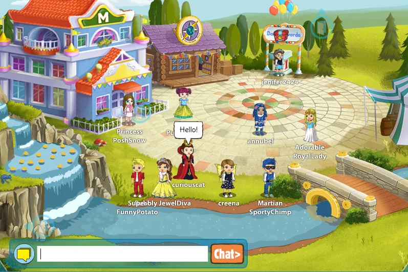
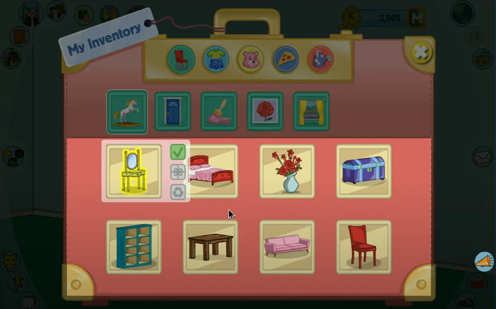

Petra's Planet was an online game platform for kids with the goal of educating them about real world cultures.
When I came aboard the game was already live but it was missing an element of 'magic'. It felt empty and disconnected. There was also no reward structure or sense of play when completing the education lessons.
As Lead Designer on the project, it was my goal to design and pitch features that focused on social and retention features as well as implement multiple rewards for learning and exploring.

First was the design of a main hub world where all players would load into. Previously, players would be loaded into a randomized location and left to explore from there. Connecting everyone together encourages players to socialize and make friends to which they could then explore the world together.
Some common retention features were also implemented such as a 'members only' mansion, daily prize chest, and a magical waterfall that would pour coins to collect a couple times a day.

In order to reward players for exploring and completing missions, customizable avatars, personal spaces and later, pets were added to the game. This allowed for many more things for players to buy as well as gave the ability for special objects to be given to players to wear, display in their homes or dress their pets with.

When first proposed these features were met with great apprehension because they were not educational. When I first pitched the inventory (originally a backpack), it was met with "that's silly! A couch can't fit in a backpack." The owners of the company did not have a games background so it took time to explain the value of these features and how they made a complete game loop which would encourage players to engage in the educational components even more.
Key Contributions
- Designed main hub world connecting all players together
- Created retention features: members mansion, daily prize chest, coin waterfall
- Added customizable avatars, personal spaces, and pets
- Designed inventory system for rewards and collectibles
- Pitched and defended game features to non-gaming stakeholders